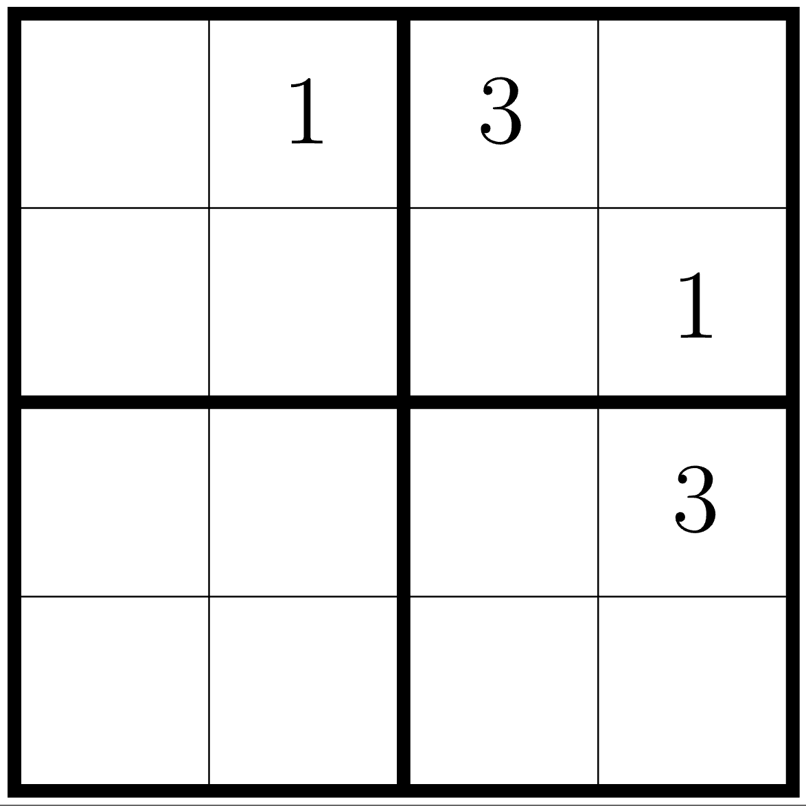
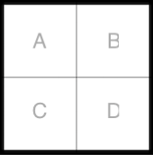

DSCI 220, 2025 W1
September 22, 2025
Variable Definitions
Rulebook
Goal: Does \(D\) follow from the rulebook?
Answer: yes, using unit propagation, as illustrated by table activity.
Works great for: rulebooks where each clause has only 1 positive unit (Horn)
Can stall on: non-Horn, symmetric choice, more complex domains.
Stalling example: \[ (A\vee B)\wedge(A\vee \neg B)\wedge(\neg A\vee B)\wedge(\neg A\vee \neg B) \]
Takeaway 1: Propagation finds what’s locally forced.
When nothing is locally forced, we need case splits or stronger rules.
Takeaway 2: The general problem of boolean function “Satisfiability” (SAT) has no known efficient solution, and is a classic “NP-Complete” problem.
A clear, finite chain of statements that:
We’ll practice four approaches for \(P\to Q\) (first 2 today, second 2 on video lesson):
Solve the Sudoku on the worksheet.
Speculate on an interesting feature of the corners.
Do all 4x4 Sudoku puzzles have this feature?
05:00
Theorem: For any integers \(a\) and \(b\), if \(ab\) is even, then \(a\) is even or \(b\) is even.
Important definition:
Universal instantiation:
Pf1: Suppose \(a\) and \(b\) are odd. Then there are integers \(k\) and \(j\) so \(a=2k+1\) and \(b=2j+1\). Then \(ab=(2k+1)(2j+1) = 2(2jk + j + k) +1\). Since \(2jk+j+k\) is an integer, \(ab\) is odd.
Pf2: Assume \(a\) or \(b\) is even. Suppose \(a\) is even – the argument is the same if it is \(b\). Then \(ab=2kb\) for some \(k\), and thus \(ab\) is even.
Pf3: Suppose that \(ab\) is even but \(a\) and \(b\) are both odd. Namely, \(ab=2n\), \(a=2k+1\), and \(b=2j+1\), for some integers \(n\), \(j\), and \(k\). Then \(2n=(2k+1)(2j+1)\) and \(n = 2jk + k + j + 1/2\) which is a contradiction.
Pf4: Let \(ab\) be an even number, say \(ab=2n\), and \(a\) be an odd number, say \(a=2k+1\). Then \(2n = (2k+1)b\) and thus \(b=2(n-kb)\) and \(b\) is even.
\(\to\) Direct Proof of \(P\to Q\)
\(\leftrightsquigarrow\) Contrapositive Proof of \(P\to Q\)
\(\bot\) Contradiction Proof of \(P\to Q\)
⊞ Cases Proof of \(P\to Q\)
Prove that for any solution to the mini sudoku puzzle below, if the solution has a 2 in the top-left square (r1c1), then it will contain a 2 in the bottom-right square (r4c4).

Let \(T_n = \frac{n(n+1)}{2}\) be the \(n\)th triangular number, \(T_1=1\), \(T_2=3\), etc.
A glow number is any integer that can be written as the sum of two consecutive triangular numbers:
\[𝑔=𝑇_𝑘+𝑇_{𝑘+1}\] Theorem: every glow number is a perfect square.
Proof: Consider an arbitrary glow number \(g\).
… therefore \(g\) is a perfect square.
is the converse true?

Game rule: each 2x2 box contains one of 1, 2, 3, and 4.
Theorem: For any valid Sudoku solution, if A and B and C are not 4, then D is 4.
Contrapositive:
Definitions:
Theorem: If \(3n+2\) is odd, then \(n\) is odd.